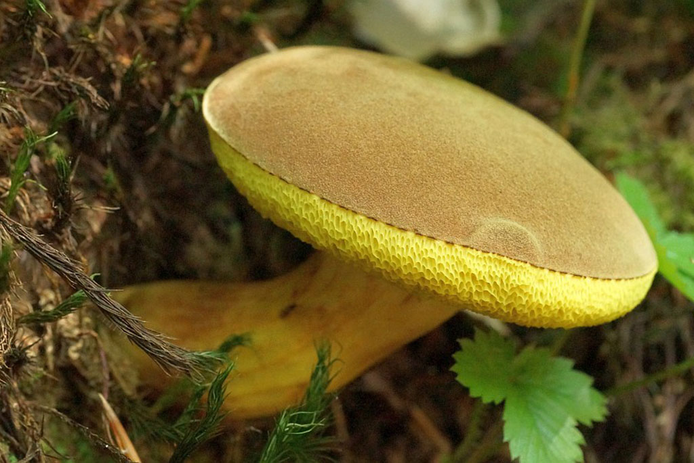

Моховик зеленый (съедобен)

Информация
- ШЛЯПКА: мясистая, полушаровидная, со временем становится бархатистой, коричневого цвета. Нижняя поверхность шляпки губчатая, с неравномерными крупноячеестыми угловатыми порами, ярко желтого, а затем зеленовато-желтого цвета. Верхняя кожица от шляпки не отделяется.
- НОЖКА: цилиндрической формы, сверху бурая, внизу желтая.
- МЯКОТЬ: светло-желтая, на изломе слегка синеет.
- СПОРОВЫЙ ПОРОШОК: от светло-охрянного до буровато-оливкового цвета.
- РАСТЕТ: в хвойных и смешанных лесах с июня до конца сентября.
- УПОТРЕБЛЕНИЕ В ПИЩУ: пригоден для жарки, варки, сушки и соления.
- ЯДОВИТЫЙ ДВОЙНИК: не имеет.